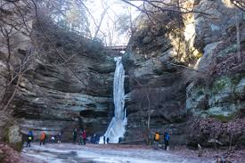

White Water Rafting
Embark on an exhilarating journey that takes you deep into nature's raw beauty, where roaring rapids and majestic landscapes await! Our white water rafting adventures are more than just a thrilling ride—they're a chance to reconnect with the wild, challenge yourself, and discover the true meaning of adventure. Whether you’re navigating turbulent Class IV rapids or floating through serene stretches of crystal-clear water, each moment brings a new sense of excitement and wonder. As you paddle through the twists and turns of the river, you’ll feel the pulse of nature’s power beneath you and the thrill of conquering its challenges. Our expert guides ensure your safety while sharing their knowledge of the river's secrets, from hidden wildlife to the rich history of these legendary waterways. It's more than just a ride—it's an immersive experience that awakens your senses and leaves you craving more.
Our Story: The Legacy of Adventure
Our journey began with a passion for adventure and a love for the wild beauty of untamed rivers. Founded in [Year], we set out to share the exhilarating experience of white water rafting with explorers from around the world. From humble beginnings with a single raft and a small team of dedicated guides, we've grown into a trusted leader in outdoor adventures, known for our commitment to safety, fun, and environmental stewardship.

Over the years, we've navigated countless rapids, forged unforgettable memories, and built a community of adventurers who share our respect for nature and thrill for the ride. Our history is more than just a timeline—it's a testament to the spirit of adventure that drives us every day.
Adventure Awaits You